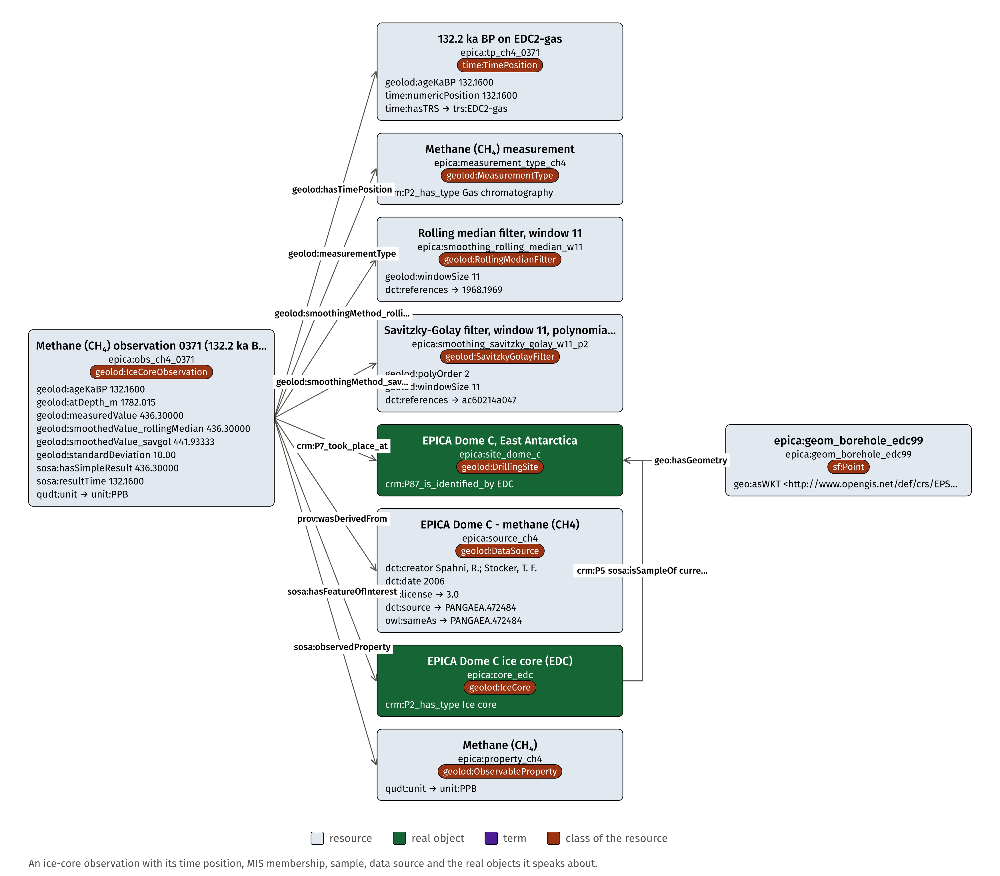
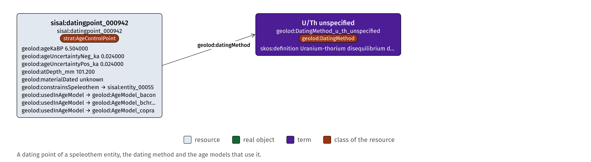
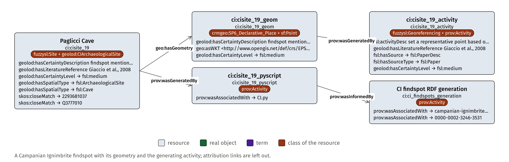

Instance models
One resource per strand with its neighbours two steps out, as stored in the graph. Grey: resources, green: real objects, violet: terms, brown pill: the class of the resource.

EPICA: one methane observation
Fiona Schenk, Florian Thiery, Research Squirrel Engineers at LEIZA. CC BY 4.0.



SISAL: one age control point
Fiona Schenk, Florian Thiery, Research Squirrel Engineers at LEIZA. CC BY 4.0.



CI: one findspot
Fiona Schenk, Florian Thiery, Research Squirrel Engineers at LEIZA. CC BY 4.0.